Let us tackle the Mission Editor Toolset first as it has the most components and is the most likely place to start for creating a simple MOD or a new game.
As we investigate and learn how to use each of the Mission Editor tools, please use the provided mission Basic Training as current mission.
| Before you experiment with the editors on any existing mission, you should back it up first. The easiest way to do this (for now) is to create a backup copy of the entire egt/missionsdirectory. Please do this before proceeding. |
Before leaping into the Mission Editor Tools, let us review some basics that hold true for all of the tools. We will review the user interface devices. Subsequently, we will discuss the mechanics of movement and viewpoint control, as well as object selection, translation, rotation, and scaling.
In this guide I refer to the cursors, menus, and other graphical elements that you will encounter in the editors as Devices. Simply stated, these devices provide meaningful feedback to you regarding what action can or should be taken. The terms below are mostly of my own invention with the exclusion of the appropriately named gizmo.
Table 1-3.
|
No Select Cursor |
When the cursor looks like this, it means that the cursor is not over a selectable object. In other words you are pointing to an empty space. |
|
Select Cursor |
When the cursor looks like this it means that the cursor is over a selectable object or group of selectable objects. |
|
Grab Cursor |
When the cursor looks like this, it means that you have selected an object(s) and are holding down the left mouse button. You have grabbed the object(s). |
|
Rotate/Scale Cursor |
When the cursor looks like this, it means you have successfully selected an axis of the gizmo in either rotation or scaling modes. It also appears when you have successfully selected a bounding box face for scaling. |
Table 1-4.
|
The graphic on the right represents the gizmo. Subsequent screenshots will show the gizmo in action, but for the purpose of discussing it's use, this representation will be simpler to talk to. The gizmo is a device that is activated when you select one or more objects. It displays three traditional X-Y-Z axes. Individual axes are selectable and afford the ability to translate, rotate, and scale. By default, a gizmo-axis is dark-cyan when not selected and light-cyan when the cursor is over it or when it has been grabbed. |
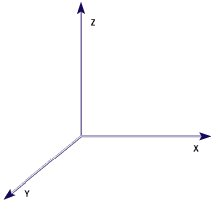 |
|
This scale shows the current position of the object's centroid when you use the gizmo to translate an object. |
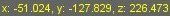 Gizmo Translation Scale |
|
This scale shows the current degrees of rotation around the selected axis when you use the gizmo to rotate an object. |
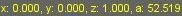 Gizmo Rotation Scale |
|
This scale shows the current height, width, and depth of a object when you use the gizmo to scale it. (w,h,d) correspond to the (x,y,z) axes of the gizmo. |
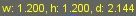 Gizmo Scaling Scale |
Table 1-5.
|
The World Editor provides a set of traditional menus for selecting the current tool as well as other features. I'll cover all of the menu options below in World Editor Menus. |
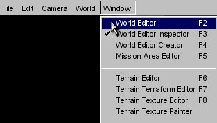 World Editor Menu |
|
Several of the tools have windows that appear on the right side of the screen. Although these windows have many similarities it will be better if I explain them individually. I will do this in the respective tool sections below. The bottom portion of the windows shown is from the HEAD release and looks slightly different from the 1_1_2 and prior releases. Similar groups of fields have been grouped in drop-down frames. In 1_1_2 and before, all fields and buttons are in the same frame, which gets a little hard to read/search sometimes. |
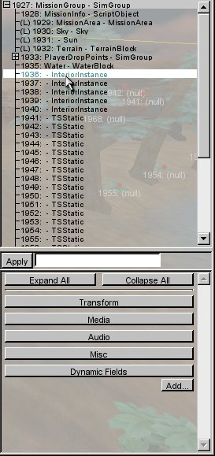 Tool Window |
Table 1-6.
|
When selecting a previously unselected object, the selection cursor lets you know when you can select something, and this selection box (green) shows which previously unselected object will be selected. |
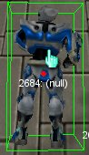 |
|
Once you have successfully selected an object, the object will be shown with a red selection box and a yellow selection box. The red box is object aligned, while the yellow box is world aligned. The purpose of the yellow box is to show which objects are selected as a group, and will therefore be affected by any actions you take. The red boxes are to show which individual objects in the group selection box are actually part of the selection. Notice that in the picture on the right, the leftmost and rightmost characters are selected, while the middle character is not. |
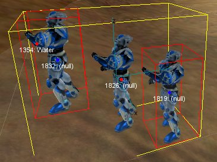 |
|
Once you have successfully selected an object, the object will selection box will turn blue if your cursor passes over it. Note: This is not true for drag-select. |
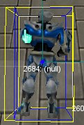 |
Table 1-7.
|
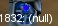 Selected Handle 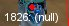 Unselected Handle |
Every object in the world displays a handle. The handle has two labels next to it:
|
|
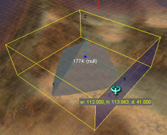 Level Grid |
When an object is selected, a faint grid will appear. The grid is parallel to the world's X-Y plane and passes through the selected object at the handle. When multiple objects are selected, the plane passes through the group handle which is located at the axis crossing point for the group gizmo. This device can be used like a ruler for placing objects accurately. Unfortunately, there is no vertical equivalent. |
Table 1-8.
|
You will see this device while editing the terrain and while adjusting terrain parameters. The premise of this device is simple. The 2D scale (line with red dots) represents parameter in two dimensions. Depending on the application, the horizontal spacing may represent elevation, radius, etc. The vertical spacing may represent opacity, blending factor, strength of action, etc. The red dots on the lines are Control-Points. These points can only be moved vertically. All scale interfaces come with a spin box to add or remove control points, thereby increasing horizontal resolution. You are better off typing in the value you want, because the spinner changes do not take affect unless you edit the textbox. |
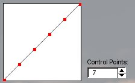 The Scale Device |
Now that we've familiarized ourselves with the various devices available in the mission editor, lets discuss the mechanics of how we manipulate objects in the mission using the mouse. We'll talk about how to move around the mission, switch camera modes and viewpoints, how to select objects and how to use the mouse to manipulate positions, rotation, and scale via the gizmo.
Table 1-9.
|
Moving Around |
W, A, S, D, SPACE BAR (Up, Left, Down, Right, Jump) |
|
Looking Around |
+ Mouse Motion |
|
Zoom |
E Zooms in when held. |
|
Basic Character Viewpoint (play mode only) |
TAB Toggles: First Person (1st POV) and Third Person (3rd POV) |
|
Camera |
ALT + C Toggles: Current Character POV (1st or 3rd) and Free Camera |
|
Camera Movement Speed |
SHIFT + 1 - SHIFT + 7 (slowest ... fastest) When camera viewpoint is selected, you may adjust the rate at which the camera moves by pressing the shift and number keys. |
|
Drop Character at Camera Position |
F7 (play mode only) ALT + W (mission editor mode only) CTRL + F7 (mission editor mode OR play mode) |
|
Drop Camera at Character Position |
ALT + Q (mission editor mode only) |
Table 1-10.
|
Object (Un)selection 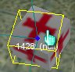 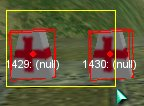 |
Selects previously unselected objects. SHIFT + Selects previously unselected objects. Unselects previously selected objects. (on empty space) + Drag Selects previously unselected objects in the drag-box. Also, previously selected objects stay selected. Note: Drag-box needs to enclose an objects handle (depicted by red dots to select object. |
|
Object Translation (w/o using Gizmo) |
+ Drag Translates selected, unselected and muliple selected objects. |
As described above, the gizmo is the aptly named three-axis device that appears when you select either a single object or a group of objects.
The gizmo has three individually selectable handles that run along the major axes X, Y, and Z. These handles gives you the ability to translate, rotate, and scale objects.
Gizmo translations and rotations can be applied to single or multiple selected objects. Rotations are always about the gizmo axis which is the handle for single selected objects and the group-handle for multiple selected objects.
Gizmo scaling can only be applied to a single selected object.
Table 1-11.
|
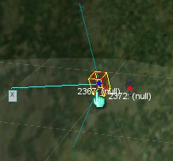 Single Object Gizmo 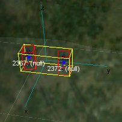 Multiple Object Gizmo |
Translation (on gizmo axis) Drag left/right for X and Y axis and up/down for Z axis. World Axis Translation SHIFT + (on gizmo axis) Drag left/right for X and Y axis, up/down for Z axis. Gizmo aligns to world axis and confines translation along selected world axis. Rotation ALT + (on gizmo axis) Drag left/right Scaling (single object only) CTRL + ALT + (on gizmo axis) Drag left to grow and right to shrink |
While experimenting, I accidentally discovered that there is another way to scale objects with the mouse. Not only is this method slightly more intuitive, but it doesn't require the use of the gizmo! Try this:
And, that is all there is to it! Below is an image that shows a selected bounding box face.